手話の見本
各ジャンルごとに認識する手話をリストにしています。
これを見て、手話の勉強にも役立ててください。
あいさつ1
おはよう
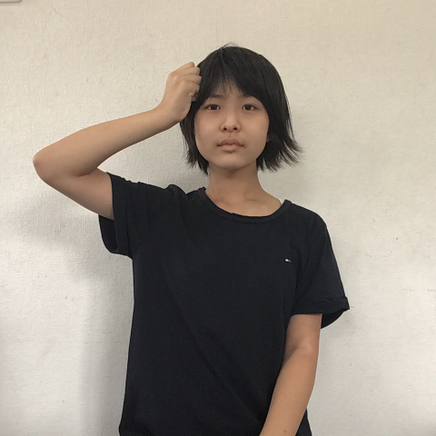
右手をグーにして頭の横に持ってくる。
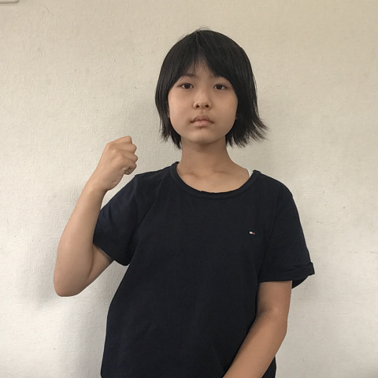
そのままこぶしを下に下げる。
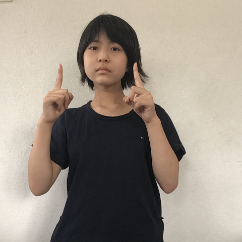
両手の人差し指を向かい合わせて立てる。
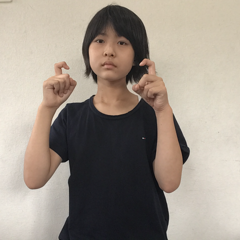
人差し指を曲げる。
こんにちは
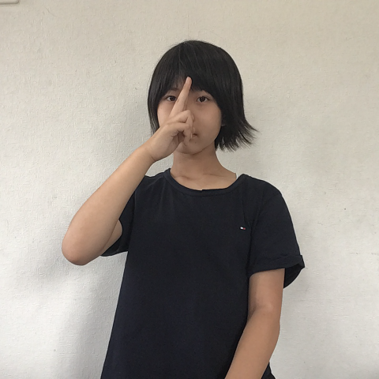
人差し指と中指をそろえて、額の真ん中に持ってくる。
両手の人差し指を向かい合わせて立てる。
人差し指を曲げる。
こんばんは
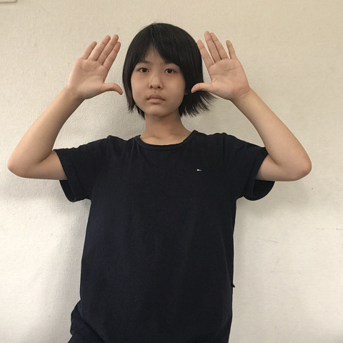
両手の手のひらを前に向けてバンザイをする。
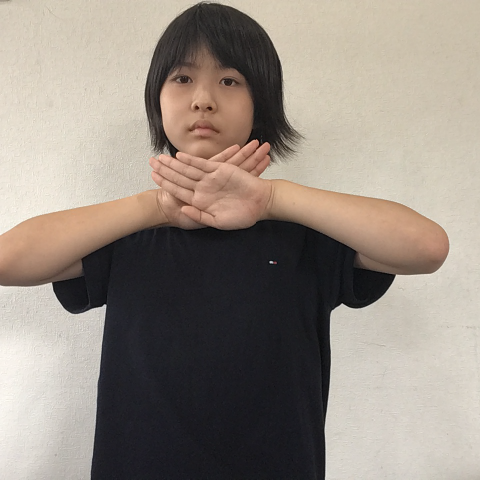
そのまま顔の前で手をクロスする。
両手の人差し指を向かい合わせて立てる。
人差し指を曲げる。
おやすみなさい
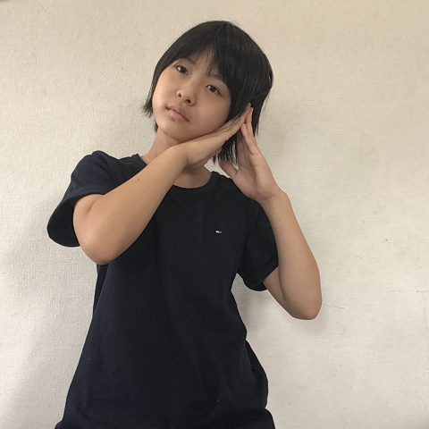
顔の横で両手を合わせて、眠るポーズをする。
お願い
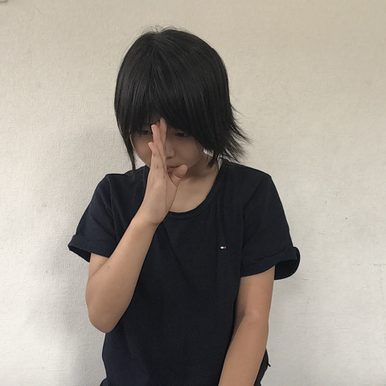
指を伸ばした手を顔の前に持ってきて、お辞儀する。
あいさつ２
さようなら
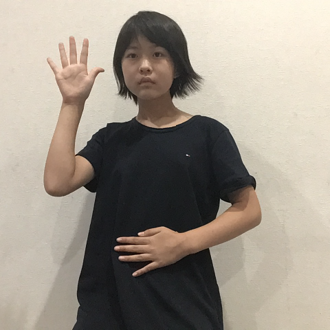
手をあげて左右に振る。
ありがとう
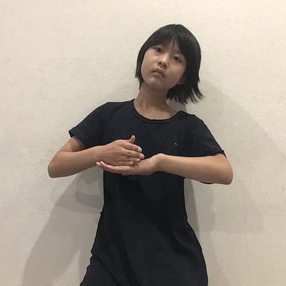
左手の手のひらを下に向けて、左手の甲に右手を当てる。
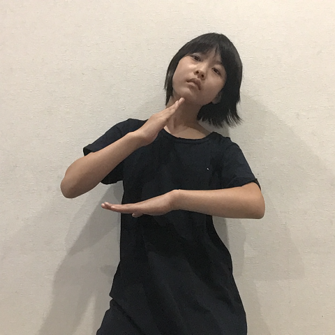
右手をあげる。この時に頭を下げる。
ごめんなさい
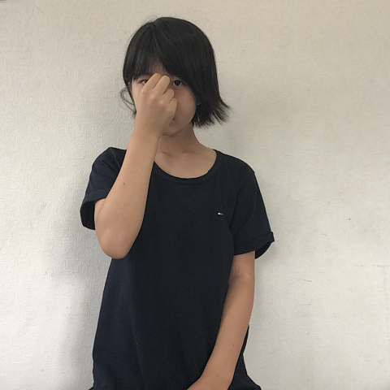
人差し指と親指でつまんだ手を顔の前に持ってくる。
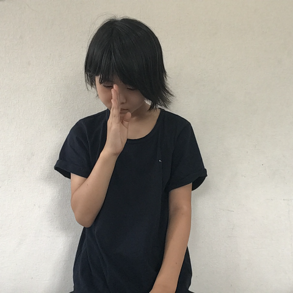
指を伸ばして手を下ろしながら頭を下げる。
返事
分かりました
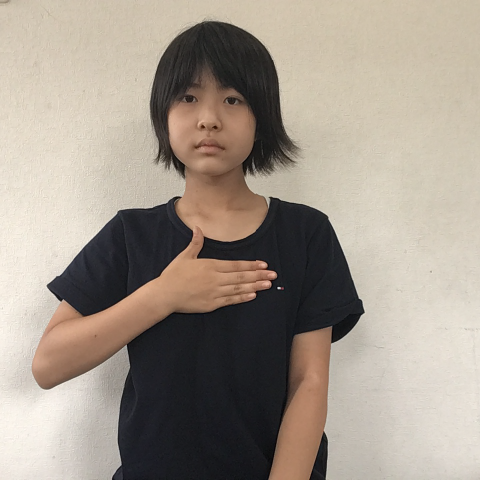
手を胸の前に当てる。
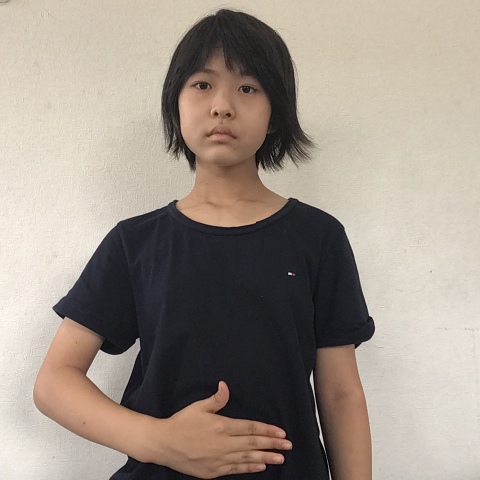
そのまま手を下げる。
いいえ
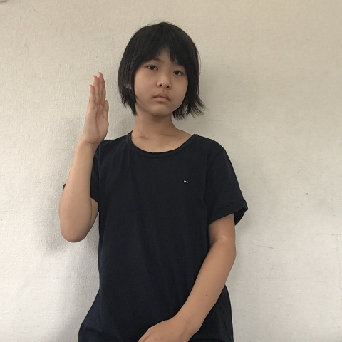
手を左右に振る。首も振る。
分かりません
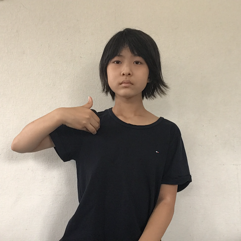
両手の手のひらを前に向けてバンザイをする。
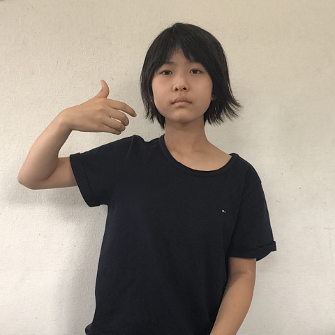
そのまま顔の前で手をクロスする。
できます
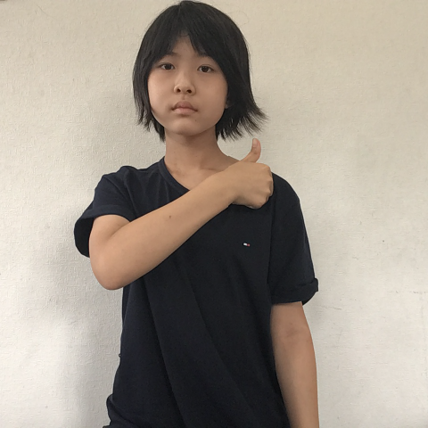
グーにした右手の親指を立てて、左肩につける。
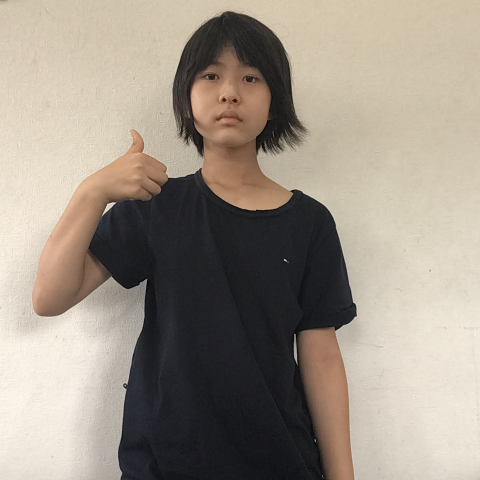
手を右に動かして右肩につける。
違います
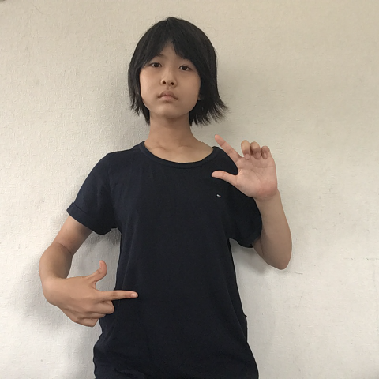
両手の親指と人差し指を伸ばして向かい合わせる。
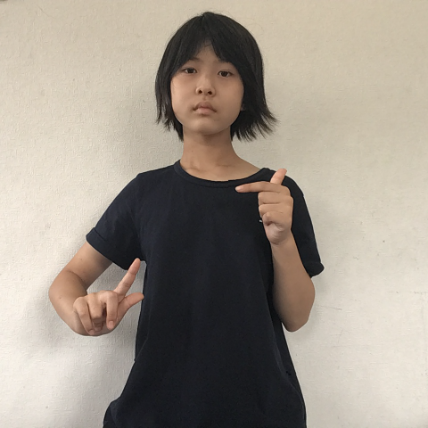
手を半回転させる。首も振る。
気持ち
嬉しい
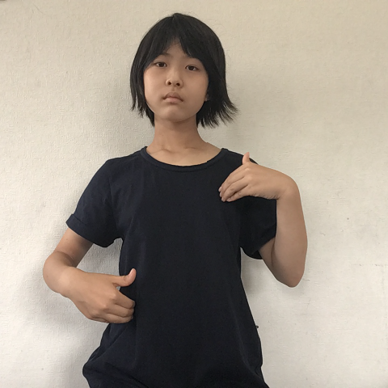
両手の指を自分の方に曲げる。
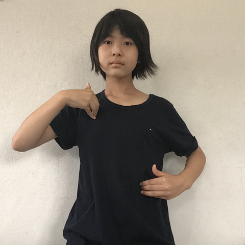
両手を交互に上下する。
頑張って
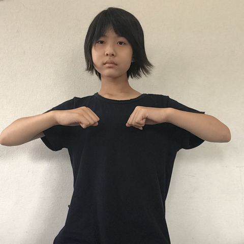
両手をグーにして、胸の前に持ってくる。肘を張る。
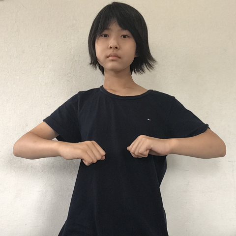
両手を２回お腹のところまで下ろす。
怒っている
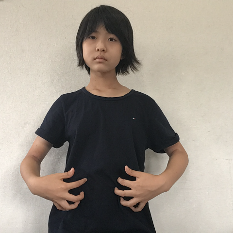
両手の指をお腹の前で曲げる。
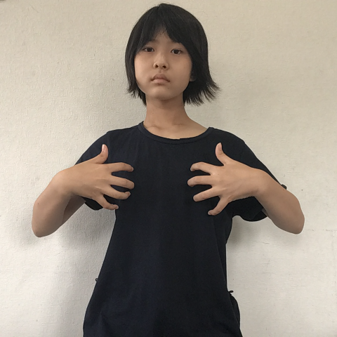
そのまま両手を胸の前まであげる。
驚いた
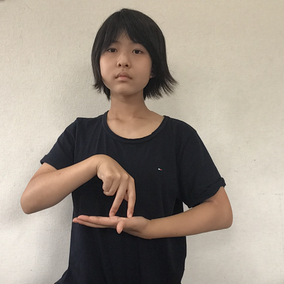
左手の上に、右手の人差し指と中指を軽く曲げて当てる。
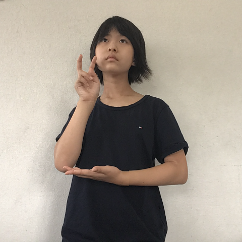
右手を上にあげる。
すみません
人差し指と親指でつまんだ手を顔の前に持ってくる。
指を伸ばして手を下ろしながら頭を下げる。
学校
給食
人差し指と中指をそろえて、額の真ん中に持ってくる。
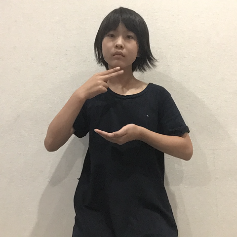
左手はお茶碗を持っている仕草、右手の中指と人差し指を伸ばして口元に持ってくる。
宿題
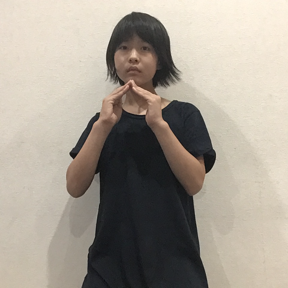
両手の指先を胸の前でつける。（家の形）
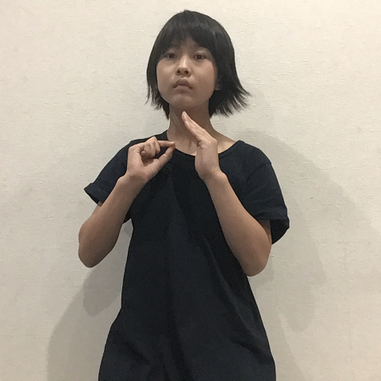
左手はそのままで、右手で字を書く動きをする。
英語
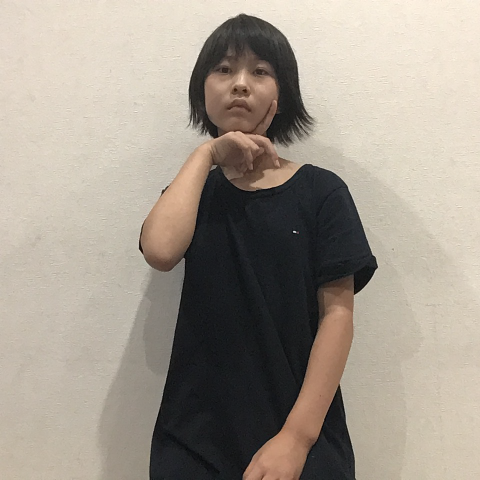
右手の人差し指と中指を左頬の横にそろえる。

そのまま右の頬までなぞる。
図書室
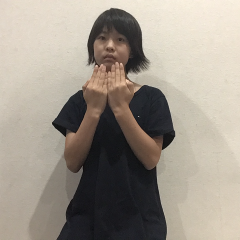
合わせた両手を開く。（本の形）
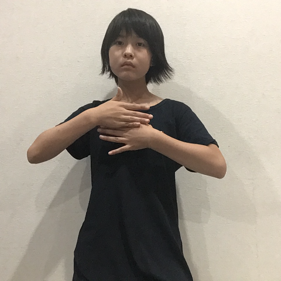
両手の手のひらを自分の方に向けて胸の前で合わせる。
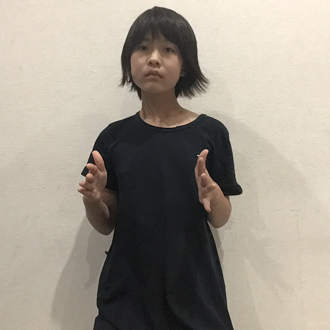
両手を肩幅に開いて前ならえのポーズ。
学校
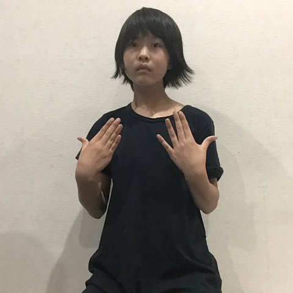
両手の手のひらを自分の方に向けて上下に２回する。